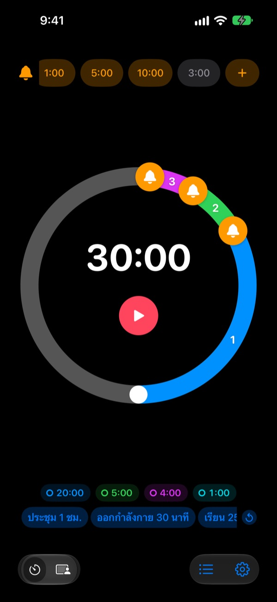
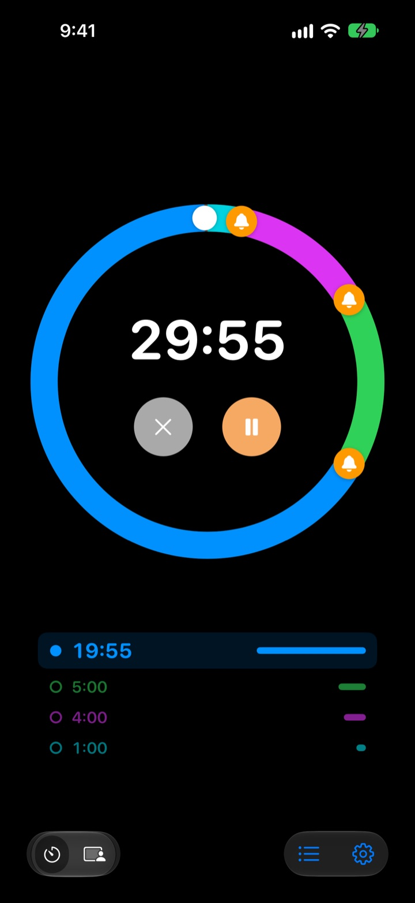
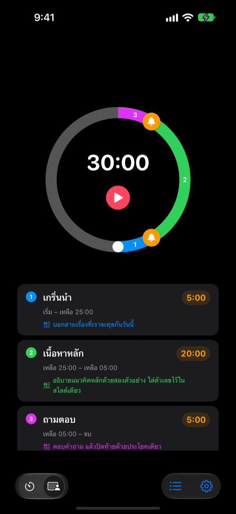
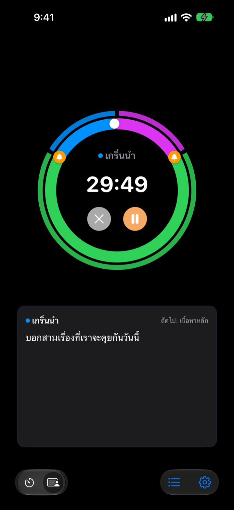

ไม่ใช่ตอนหมดเวลาแล้ว
แต่ก่อนหน้านั้น
5 นาทีก่อนจบการนำเสนอ 3 นาทีก่อนปิดประชุม Rereminder เตือนทุกจุดที่คุณตั้งไว้ ไม่ต้องคอยเหลือบดูนาฬิกาอีกต่อไป
แจ้งเตือนล่วงหน้าใช้ฟรีไม่จำกัด ใช้ได้บน iPhone, Apple Watch และ Mac

ลองเล่นได้เลยตรงนี้
เลือกความยาวและจุดเตือน แล้วกดปุ่มสีแดง หนึ่งนาทีจะผ่านไปในหนึ่งวินาที และจะมีเสียงเตือนเมื่อถึงแต่ละจุด
เคยไหม นาฬิกาดังตอนที่สายไปแล้ว
ตัวจับเวลาทั่วไปจะดังเมื่อถึงศูนย์เท่านั้น การนำเสนอหมดเวลาก่อนถึงบทสรุป คาบเรียนจบโดยยังไม่ได้ทบทวน และการประชุมล้นไปทับนัดถัดไปโดยไม่ได้ข้อสรุป สิ่งที่คุณต้องการไม่ใช่เสียงบอกว่าหมดเวลา แต่เป็นสัญญาณตอนที่ยังมีเวลาพอจะปิดท้าย
เตือนก่อนหมดเวลา กี่ครั้งก็ได้
ลากกระดิ่งบนหน้าปัดไปไว้ที่ 10, 5 หรือ 1 นาทีก่อนหมดเวลา หรือจุดไหนก็ได้ ไม่จำกัดจำนวน และแต่ละการเตือนใส่ข้อความของตัวเองได้ เช่น "สรุปสไลด์"
แม้หน้าจอดับ เวลาที่เหลือก็ยังแสดงบนหน้าจอล็อคและ Dynamic Island และ Apple Watch จะสั่นเบาๆ ที่ข้อมือ

แบ่งการนำเสนอเป็นช่วง
เปิด 5 นาที เนื้อหาหลัก 20 นาที ถามตอบ 5 นาที ตั้งชื่อและเขียนบทพูดให้แต่ละช่วง ทุกครั้งที่เปลี่ยนช่วงจะเตือนด้วยชื่อช่วงนั้น เวลาจึงเป็นไปตามแผนได้เอง (Pro)

สิ่งที่ต้องพูดตอนนี้ อยู่บนหน้าจอ
ระหว่างจับเวลา บทพูดของช่วงปัจจุบันและช่วงถัดไปจะแสดงตัวใหญ่ ถ้าเลยศูนย์ก็ยังนับต่อ ให้คุณรู้ว่าเกินไปเท่าไร (Pro)

เริ่มได้ในสามขั้นตอน
- 1
ตั้งเวลา
หมุนหน้าปัด หรือแตะที่เวลาแล้วพิมพ์ หนึ่งรอบคือ 60 นาที สองรอบคือ 120 นาที
- 2
วางจุดเตือน
แตะป้ายอย่าง 1:00 หรือ 5:00 ด้านบน หรือลากกระดิ่งไปวางบนหน้าปัด
- 3
กดเริ่มแล้ววางใจ
ล็อคหน้าจอได้เลย iPhone และ Apple Watch จะเตือนทุกจุดที่คุณตั้งไว้
การตั้งค่าที่คนใช้บ่อย
- นำเสนอ 20 นาที
- ก่อน 5 นาที "เข้าสู่บทสรุป" ก่อน 1 นาที "กล่าวขอบคุณ"
- คาบเรียน 50 นาที
- ก่อน 10 นาที "อธิบายการบ้าน" ก่อน 3 นาที "สรุปบทเรียน"
- ประชุม 30 นาที
- ก่อน 5 นาที "สรุปสิ่งที่ตัดสินใจ"
- คลาสพิลาทิสหรือโยคะ
- โหมดเซสชัน หนึ่งช่วงต่อหนึ่งชุดท่า (Pro)
- อ่านหนังสือ 25 นาที
- ก่อน 5 นาที แล้วพัก
- พักระหว่างเซต 3 นาที
- ก่อน 30 วินาที "เตรียมเซตถัดไป"
- เมนเทอร์หรือให้คำปรึกษา 1 ชั่วโมง
- ก่อน 15 นาทีและ 5 นาที
การตั้งค่าที่ใช้บ่อยบันทึกเป็นเทมเพลตแล้วเรียกใช้ได้ในแตะเดียว (ตั้งแต่แผนจดจำขึ้นไป) และยังเริ่มหรือหยุดตัวจับเวลาผ่านคำสั่งลัดและ Siri ได้ด้วย
แจ้งเตือนล่วงหน้าฟรี จ่ายเฉพาะเมื่ออยากให้จดจำการตั้งค่า
ฟรี
- แจ้งเตือนล่วงหน้าไม่จำกัด
- ข้อความของคุณเองในทุกการเตือน
- กิจกรรมสดบนหน้าจอล็อคและ Dynamic Island
- เตือนต่อจนกว่าคุณจะตอบ และจบด้วยเสียงปลุกเต็มรูปแบบ
- แอป Apple Watch และแถบเมนูบน Mac
- สีธีมทั้งหมด
จดจำ · Pro
- จดจำ: บันทึกการตั้งค่าเป็นเทมเพลตแล้วเริ่มได้ในแตะเดียว
- จดจำ: เปิดแอปอีกครั้ง ทุกอย่างอยู่เหมือนครั้งก่อน
- Pro: ทุกอย่างในจดจำ พร้อมโหมดเซสชันที่มีชื่อช่วงและบทพูด
- Pro: นับเวลาที่เกิน ประวัติ และสถิติ
แต่ละแผนเลือกได้ทั้งแบบรายปีหรือซื้อครั้งเดียวใช้ตลอดชีพ โหมดเซสชัน การนับเวลาที่เกิน และประวัติ ลองใช้ได้สองสามครั้งก่อนจ่าย
ไม่มีโฆษณา และพาสตลอดกาลใบเดียวเปิดได้ทุกแอปที่ Leeo ทำ
คำถามที่พบบ่อย
การเตือนไม่ดัง
ส่วนใหญ่มาจากสิทธิ์การแจ้งเตือนหรือโหมดโฟกัส ตรวจสอบสิทธิ์การแจ้งเตือนในแอปที่ การตั้งค่า › วิธีแจ้งเตือน ถ้าใช้โฟกัส ให้เพิ่ม Rereminder เป็นแอปที่อนุญาตใน การตั้งค่า › โฟกัส ของ iOS ในโหมดเงียบจะมีแค่การสั่น ถ้า Rereminder อยู่ใน การตั้งค่า › การแจ้งเตือน › สรุปตามกำหนดการ การเตือนจะถูกเก็บไว้ส่งทีหลัง ให้นำออกจากตรงนั้น
อยู่ในโหมดเงียบจะรู้ไหมว่าหมดเวลาแล้ว
รู้ เปิด "จบด้วยเสียงปลุกเต็มรูปแบบ" แล้วจะดังชัดแม้อยู่ในโหมดเงียบหรือโฟกัส ถ้าเปิด "เตือนต่อจนกว่าฉันจะตอบ" จะเตือนซ้ำไปจนกว่าคุณจะแตะหยุดหรือเลื่อนปลุกบนการแจ้งเตือน
Apple Watch ไม่ซิงค์
เปิด การตั้งค่า › อุปกรณ์ของฉัน ในแอป จะเห็นว่าขาดขั้นตอนไหน นาฬิกาต้องจับคู่กับ iPhone เครื่องนี้ ต้องติดตั้ง Rereminder บนนาฬิกา และหลังติดตั้งต้องเปิดแอปบนนาฬิกาหนึ่งครั้ง หลังจากนั้นตัวจับเวลาจะส่งไปถึงนาฬิกาแม้แอปบนนาฬิกาปิดอยู่
Mac ขึ้นว่ายังไม่เชื่อมต่อ
"เชื่อมต่อแล้ว" หมายถึงแอปเคยเปิดบน Mac เครื่องนั้นภายใน 10 นาทีที่ผ่านมา Mac ที่เพิ่งตื่นจึงจะขึ้นมาหลังจากนั้นไม่กี่นาที ทั้งสองเครื่องต้องใช้บัญชี iCloud เดียวกันและเปิด iCloud Drive ไว้ แอป Mac ต้องใช้ macOS 26 ขึ้นไป
จ่ายเงินแล้วแต่ยังไม่ปลดล็อค
แตะ "กู้คืนการซื้อ" ที่หน้าแผน โดยลงชื่อเข้าด้วยบัญชี Apple เดียวกับที่ใช้จ่ายเงิน แผนตลอดชีพจะกลับมาแม้ลบแอปแล้วติดตั้งใหม่หรือเปลี่ยนเครื่อง
เทมเพลตที่บันทึกไว้ถูกล็อค
เทมเพลตยังอยู่ครบ ถ้าไม่มีจดจำหรือ Pro จะยังแสดงอยู่แต่ถูกล็อค และจะเปิดได้ทันทีที่คุณซื้ออย่างใดอย่างหนึ่ง
อยากขอคืนเงิน
Apple เป็นผู้ดูแลการคืนเงิน ขอได้ที่ reportaproblem.apple.com ด้วยบัญชี Apple ที่ใช้จ่ายเงิน ถ้าเป็นเพราะแอปมีปัญหา ช่วยแจ้งมาด้วย จะได้แก้ไม่ให้คนต่อไปเจอซ้ำ
ลองใช้โดยไม่ติดตั้งได้ไหม
เปิด m1zz.github.io/rereminder บน iPhone ตัวจับเวลาจะทำงานทันทีในรูปแบบ App Clip มีหน้าปัดและการเตือนครบ ส่วนเทมเพลต โหมดเซสชัน และแอปนาฬิกาอยู่ในแอปตัวเต็ม
ใช้กับอุปกรณ์อะไรได้บ้าง
iPhone ที่ใช้ iOS 26 ขึ้นไป Apple Watch ที่ใช้ watchOS 11.6 ขึ้นไป และ Mac ที่ใช้ macOS 26 ขึ้นไป ยังไม่รองรับ iPad แอปมีให้ใช้ 24 ภาษา
ข้อมูลของฉันเก็บไว้ที่ไหน
ตัวจับเวลา เทมเพลต ชื่อช่วง บทพูด และประวัติ อยู่ในอุปกรณ์ของคุณทั้งหมด และจะหายไปพร้อมกับการลบแอป แอปส่งแค่สถิติการใช้งานแบบไม่ระบุตัวตนเพื่อใช้ปรับปรุง รายละเอียดอยู่ในนโยบายความเป็นส่วนตัว
มีคำถามหรือข้อเสนอแนะ ส่งมาที่ leeo@kakao.com ได้เลย ปกติจะตอบภายใน 2 ถึง 3 วัน